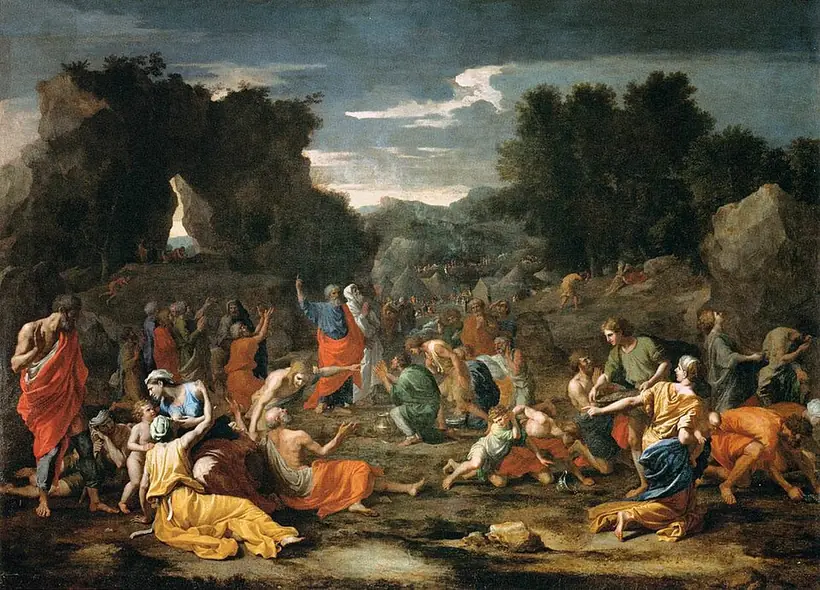
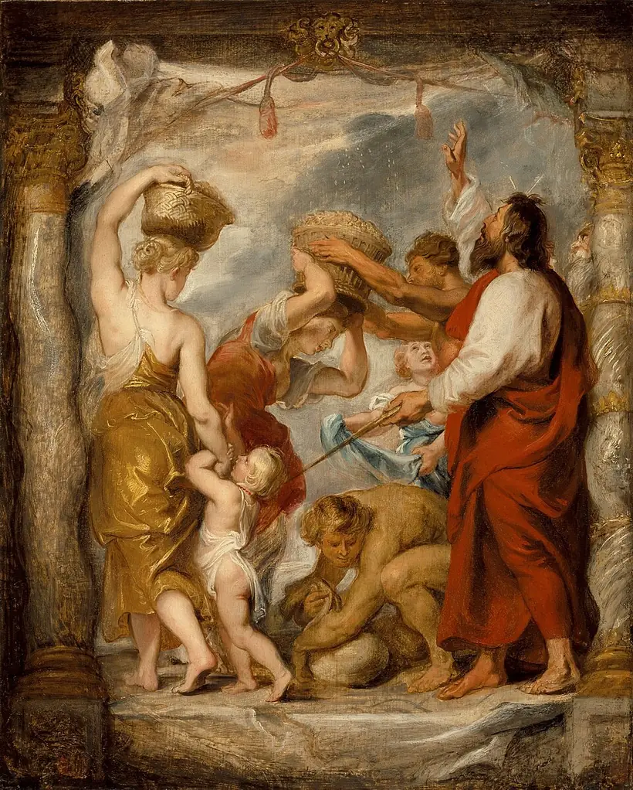
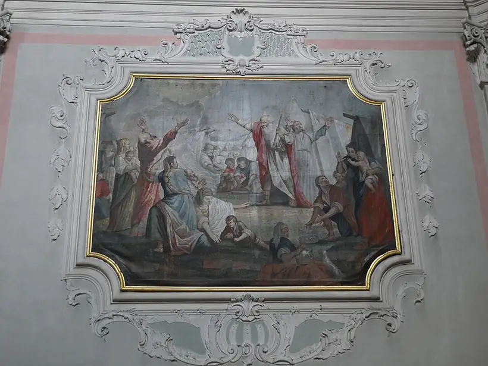

The claim
In 1978 George Sassoon and Rodney Dale published The Manna Machine, arguing that the manna described in Exodus was produced by a machine — a device that grew algae, specifically chlorella, to feed the Israelites in the desert. The reconstruction was based on their reading of the Zohar, the medieval kabbalistic text.
Maps, diagrams and images






The argument treats the Zohar's description of a divine apparatus as a description of a physical device, and then engineers the device from that reading.
The problems
The Zohar is a thirteenth-century mystical work, not a technical manual, and its descriptions are symbolic. The machine has never been found, and the logistics — a device producing food for a population for forty years — would leave traces, fuel requirements and maintenance records that do not exist.
The natural explanations for manna have their own literature: a secretion of scale insects on tamarisk, still harvested in the region, which appears seasonally and does not keep.
Documented: the book, its argument and its source.
Documented: the natural candidates for manna.
Not established: any machine.
The methodological error: reading a mystical text as an engineering spec.
The honest label: fringe — an inventive reconstruction with no archaeological support.
Why it is in the archive
Because it is the most elaborate example of a genre that runs through the collection: taking a text written to mean one thing and reading it as a technical document.
Open resources on this topic
- BookThe Manna Machine — George Sassoon and Rodney Dale · 1978 (Internet Archive, free to read)
- PapersOpen-access articles: DOAJ · PubMed Central · Internet Archive Scholar
- BooksPublic-domain and borrowable copies: Open Library · Project Gutenberg · Google Books
More images
Cite this page
Momin, S. (2026). The Manna Machine. The Larger World Archive. https://drsamonline.github.io/LARGE_GLOBE/manna-machine.htmlMomin, Sohil. “The Manna Machine.” The Larger World Archive, 2026, https://drsamonline.github.io/LARGE_GLOBE/manna-machine.html.Momin, Sohil. “The Manna Machine.” The Larger World Archive, 2026. https://drsamonline.github.io/LARGE_GLOBE/manna-machine.html.@misc{the2026manna,
author = {Momin, Sohil},
title = {The Manna Machine},
year = {2026},
howpublished = {The Larger World Archive},
url = {https://drsamonline.github.io/LARGE_GLOBE/manna-machine.html},
note = {Last reviewed 20 November 2026}
}Last reviewed 20 November 2026 · Corrections policy · this page is not peer reviewed
Sources for this page
- Wikipedia, “Manna” — the substance and the explanationsen.wikipedia.org
- Wikipedia, “Zohar” — the text the argument usesen.wikipedia.org
- Wikipedia, “Book of Exodus” — the narrativeen.wikipedia.org
- Wikipedia, “Chlorella” — the organism proposeden.wikipedia.org